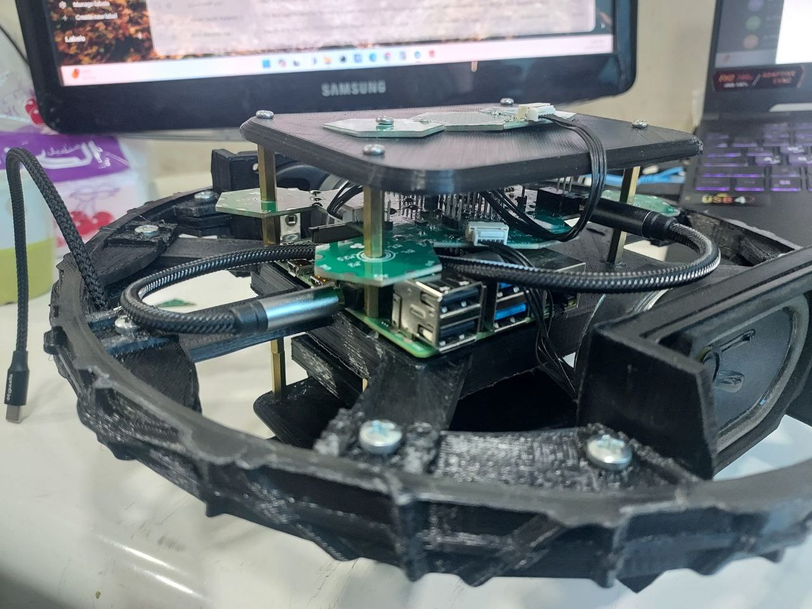
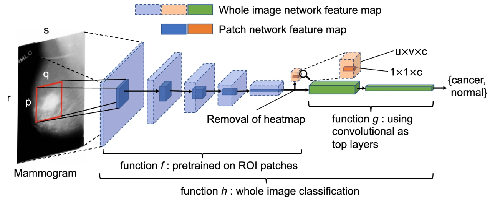
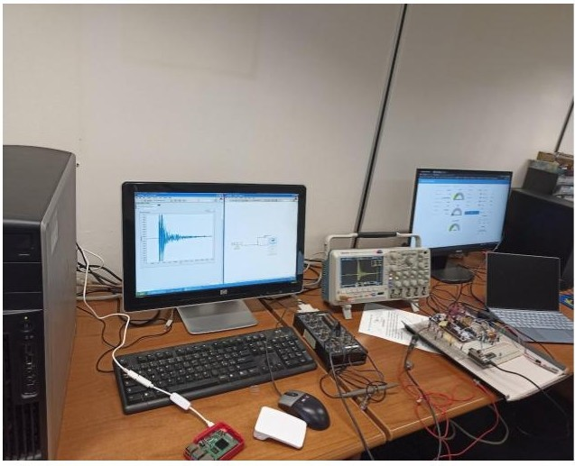

Attending IPIN 2025 Conference in Tampere, Finland to present research on indoor positioning and navigation systems.
News 2
New publication accepted at an ION PLANS IEEE.
News 3
New publication accepted at an IEEE conference APSCON "Step Detection Enhanced by Anomaly Filtering".
News 4
Started my PhD position at GEOLOC Lab.
Embedded Projects
Embedded LinuxYocto Project
Muzziball Custom OS Development
A custom Linux-based operating system built using Yocto Project for the Muzziball device, integrating hardware components and providing a robust foundation for advanced features.
STM32MP1BSPWiFi/BLEALSA Audio
Embedded LinuxAutomotive
Automotive Embedded System
A comprehensive automotive embedded system combining STM32MP1 and i.MX93 processors, providing a robust platform for modern vehicle applications with real-time processing capabilities.
STM32MP1/i.MX934G LTEGPSReal-time
Embedded SystemsIoT

Muzziball Smart Interactive Ball
A sophisticated embedded system project that combines hardware and software to create an interactive ball with multiple sensors, actuators, and real-time data processing capabilities.
IMURGB LEDMotion ControlReal-time
IoTSignal Processing
Wireless Crack Detection System
A sophisticated real-time crack detection system combining Acoustic Emission technology with IoT capabilities for infrastructure monitoring and structural health assessment.
Acoustic EmissionMQTTGPSNode-RED
IoT SecurityCloud Computing
Secure IoT System with AWS Integration
A comprehensive IoT security project implementing robust security measures throughout the IoT pipeline while providing intuitive monitoring and control interfaces.
ESP32AWS IoT CoreSSL/TLSDynamoDB
IoTAndroid
Smart Home IoT System with Android Control
A comprehensive smart home automation system featuring Android application interface, ESP32-based hardware control, and Firebase cloud integration for secure access.
AndroidESP32FirebaseHVAC Control
Optical CommunicationSecurity
Free Space Optical Communication System
A comprehensive study and implementation of secure free space optical communication using LASER technology and AES encryption with theoretical analysis and practical implementation.
LASERAES EncryptionMATLABOptisystem
Deep LearningSignal Processing
Robust SmartStep: Anomaly Filtering for PDR
A novel approach to improve step detection in Pedestrian Dead Reckoning systems using deep learning-based anomaly filtering to distinguish genuine walking signals from anomalies.
AutoencoderIMUPDRAnomaly Detection
Deep LearningMedical AI

RSNA Breast Cancer Detection
Deep learning models for breast cancer detection from mammogram images, developed for the RSNA competition on Kaggle to improve early detection and survival rates.
CNNMammographyMedical ImagingKaggle
NLPDeep Learning
Contradictory Text Analysis NLP
Classification of premise-hypothesis pairs into entailment, contradiction, or neutral categories using advanced NLP techniques and BERT-based models for multilingual text analysis.
BERTNLPClassificationMultilingual
SDNNetworking
Dijkstra and Bellman-Ford RYU Controller
An advanced Software-Defined Networking project implementing both Dijkstra and Bellman-Ford shortest-path algorithms using the RYU controller for optimal network routing.
RYU ControllerOpenFlowMininetNetworkX
Wireless NetworksLoad Balancing
Load Balancing for Face Recognition Video Streaming
A sophisticated load balancing solution for face recognition video streaming in wireless networks using Mininet-WiFi and RYU controller with QoS management.
Mininet-WiFiFace RecognitionQoSPSNR Analysis
Muzziball Custom OS Development
A custom Linux-based operating system built using Yocto Project for the Muzziball device, integrating various hardware components and software dependencies. The system provides a robust foundation for the device's advanced features while ensuring optimal performance and reliability.
Key features include:
Custom Yocto-based Linux distribution
STM32MP1 BSP development and integration
WiFi and Bluetooth Low Energy (BLE) support
ALSA audio system integration
RGB LED matrix display, IMU, and audio input/output
Power management system
Automotive Embedded System
A comprehensive automotive embedded system solution that has two versions one based on STM32MP1, and the other based on i.MX93 processors. This unified system provides a robust platform for modern vehicle applications, offering both real-time processing and advanced features.
Key features include:
customize two linux kernel using yocto: STM32MP1 and i.MX93
Real-time processing capabilities for critical vehicle functions
Enhanced security features for automotive applications
4G LTE cellular connectivity for remote monitoring
GPS module for precise location tracking
Ethernet for high-speed data transfer
USB interfaces for peripheral expansion
WiFi for wireless connectivity
Bluetooth Low Energy (BLE) for short-range communication
Analog-to-Digital conversion (ADC) for sensor integration
Muzziball - Smart Interactive Ball
A sophisticated embedded system project that combines hardware and software to create an interactive ball with multiple sensors and actuators. The system features advanced motion control, sensor integration, and real-time data processing capabilities.
Key features include:
Advanced motion orchestration system for precise ball movement and control
IMU (Inertial Measurement Unit) integration for accurate motion tracking
Intelligent power mode management system to optimize battery life
RGB LED matrix for dynamic color display and visual feedback
Real-time data transmission to server for remote monitoring
Comprehensive battery management system with status reporting
Wireless Crack Detection System

A sophisticated real-time crack detection system that combines Acoustic Emission (AE) technology with IoT capabilities. This master thesis project demonstrates the integration of embedded systems with cloud technologies for infrastructure monitoring.
Key Features:
Real-time crack detection using Acoustic Emission sensors
High-precision analog signal processing circuit
Microsecond-resolution GPS timestamping
MQTT protocol for reliable data transmission
Raspberry Pi-based smart gateway
Node-RED visualization interface
Multi-node support for distributed sensing
Cloud integration for data storage and analysis
The system demonstrates the practical application of IoT technologies in structural health monitoring, providing a robust solution for real-time crack detection and infrastructure monitoring.
Secure IoT System with AWS Integration
A comprehensive IoT security project focused on developing a secure system for collecting, transmitting, and storing sensor data in the cloud. The project implements robust security measures throughout the IoT pipeline while providing an intuitive user interface for monitoring and control.
A comprehensive smart home automation system featuring an Android application interface and ESP32-based hardware control. The system provides secure access, automated environmental control, and real-time monitoring capabilities through Firebase cloud integration.
System Components:
Android Application:
Secure login system with Firebase authentication
Intuitive drawer navigation interface
Real-time control and monitoring panels
Responsive and modern UI design
Control Features:
Automated and manual lighting control
RGB LED color management with auto/manual modes
Smart HVAC system with auto/manual temperature control
Customizable automation rules
Monitoring Capabilities:
Real-time temperature and humidity tracking
Ambient light intensity measurement
Fire detection system
Gas leakage monitoring
The project demonstrates the practical implementation of IoT technology in home automation, combining secure cloud connectivity, mobile accessibility, and comprehensive environmental control in a user-friendly package.
Free Space Optical Communication System with AES Encryption
A comprehensive study and implementation of a secure free space optical communication system using LASER technology and AES encryption. This project combines theoretical analysis with practical implementation, demonstrating advanced concepts in optical communication and data security.
Theoretical Research:
Analysis of laser wavelength impact on attenuation rates (optimal at 1550nm)
Simulation using Optisystem for system modeling and verification
Study of fog effects on 650nm laser transmission
Mathematical modeling of distance vs. weather conditions vs. received optical power
Pioneer implementation of Eye Diagram analysis at Aleppo University
Practical Implementation:
Custom hardware design:
Laser transmitter module
Optical receiver with phototransistor
OOK modulation circuit
MATLAB-based user interface supporting:
Audio transmission
Video streaming
Text communication
Image transfer
AES encryption implementation for secure data transmission
USB interface for data transfer between PC and optical system
Successful testing at 50m distance (theoretical range up to 100m)
The system demonstrates practical applications of free space optics in secure communication, combining theoretical research with real-world implementation.
Robust SmartStep: Anomaly Filtering for Pedestrian Dead Reckoning
A novel approach to improve step detection in Pedestrian Dead Reckoning (PDR) systems using deep learning-based anomaly filtering. This project focuses on enhancing the accuracy of step detection by distinguishing between genuine walking signals and mimic walking signals.
Key Features:
Advanced anomaly detection using segment-based autoencoders
Real-time processing of IMU data for step detection
Improved PDR accuracy through filtered step detection
Robust handling of various walking patterns and anomalies
Integration with existing positioning systems
Technical Implementation:
Deep learning architecture:
Segment-based autoencoder for anomaly detection
Custom loss functions for optimal performance
Real-time inference capabilities
Signal processing:
IMU data preprocessing and feature extraction
Time-series analysis of walking patterns
Integration with PDR algorithms
Performance evaluation:
Extensive testing with various walking scenarios
Comparison with traditional step detection methods
Quantitative analysis of positioning accuracy
The project demonstrates significant improvements in PDR accuracy by effectively filtering out anomalous signals that could lead to incorrect step detection. This work has been published at the IEEE/ION Position, Location and Navigation Symposium (PLANS) 2025 in Utah, USA.
Publication:
Sayyaf, M. I., Zhu, N., & Renaudin, V. (2025). Advanced Step Detection with Anomaly Filtering for Enhanced Positioning Accuracy. Proceedings of the 2025 IEEE/ION Position, Location and Navigation Symposium (PLANS), Utah, USA.
Breast cancer is a significant cause of cancer-related fatalities among women globally. Timely detection of breast cancer is critical for successful treatment and improved survival rates. In recent times, deep learning techniques have emerged as promising tools for detecting breast cancer from medical images, including mammograms.
The RSNA Breast Cancer Detection competition, hosted on Kaggle, serves as an important initiative to foster the development of machine learning models for breast cancer detection. Participants are provided with a dataset of mammogram images, accompanied by labels indicating the presence or absence of breast cancer. The primary challenge is to create deep learning models capable of accurately detecting breast cancer from these mammogram images.
In this project, we explore the RSNA Breast Cancer Detection competition, examining the approaches and techniques employed by top-performing models. Our objective is to gain valuable insights into the best practices for utilizing deep learning methods in breast cancer detection and understand the advancements made in this critical field.
We are conducting a classification task on pairs of sentences, which consist of a premise and a hypothesis. The task involves categorizing each pair into one of three categories - entailment, contradiction, or neutral.
Example Analysis:
Using the premise: "He came, he opened the door and I remember looking back and seeing the expression on his face, and I could tell that he was disappointed."
Entailment example: "Just by the look on his face when he came through the door I just knew that he was let down" - This is true based on the premise information.
Neutral example: "He was trying not to make us feel guilty but we knew we had caused him trouble" - Cannot be concluded from the premise.
Contradiction example: "He was so excited and bursting with joy that he practically knocked the door off its frame" - This contradicts the premise information.
Technical Features:
Natural Language Processing with BERT-based models
Multi-class text classification (entailment, contradiction, neutral)
Multilingual support for 15 languages
Advanced text preprocessing and tokenization
Performance evaluation and model optimization
The dataset contains premise-hypothesis pairs in fifteen different languages, namely Arabic, Bulgarian, Chinese, German, Greek, English, Spanish, French, Hindi, Russian, Swahili, Thai, Turkish, Urdu, and Vietnamese. This project focuses primarily on English pairs but demonstrates the multilingual capabilities of modern NLP models.
An advanced Software-Defined Networking (SDN) project that implements both Dijkstra and Bellman-Ford shortest-path algorithms using the RYU controller. This project demonstrates the practical application of network routing algorithms in SDN environments.
Key Features:
Implementation of both Dijkstra and Bellman-Ford algorithms for path computation
Network topology visualization using NetworkX library
Support for multiple link cost metrics:
Bandwidth-based routing
Delay-based routing
Combined bandwidth and delay metrics
Hop count-based routing
Integration with Mininet for network emulation
Real-time path computation and flow table updates
Technical Implementation:
Python-based RYU controller application
NetworkX for graph representation and algorithm implementation
OpenFlow protocol for SDN control
Mininet for network emulation and testing
The project showcases the practical implementation of network routing algorithms in SDN environments, providing a flexible and efficient solution for path computation in software-defined networks.
Load Balancing for Face Recognition Video Streaming in Wireless Networks
A sophisticated load balancing solution for face recognition video streaming in wireless networks, implemented using Mininet-WiFi and RYU controller. This project addresses the challenges of video streaming in wireless environments while maintaining high-quality face recognition performance.
Key Features:
Dynamic load balancing for video streaming traffic
Integration with face recognition systems
Real-time network monitoring and path optimization
Support for multiple wireless access points
Quality of Service (QoS) management
Performance metrics monitoring:
PSNR (Peak Signal-to-Noise Ratio) analysis
Throughput measurement
Network latency monitoring
Technical Implementation:
Mininet-WiFi for wireless network emulation
RYU controller for SDN-based network management
Custom load balancing algorithms
Integration with face recognition systems
Performance analysis tools and metrics
The project demonstrates the effective application of SDN principles in wireless networks, particularly for resource-intensive applications like video streaming and face recognition. It provides a robust solution for maintaining high-quality video transmission while optimizing network resources.